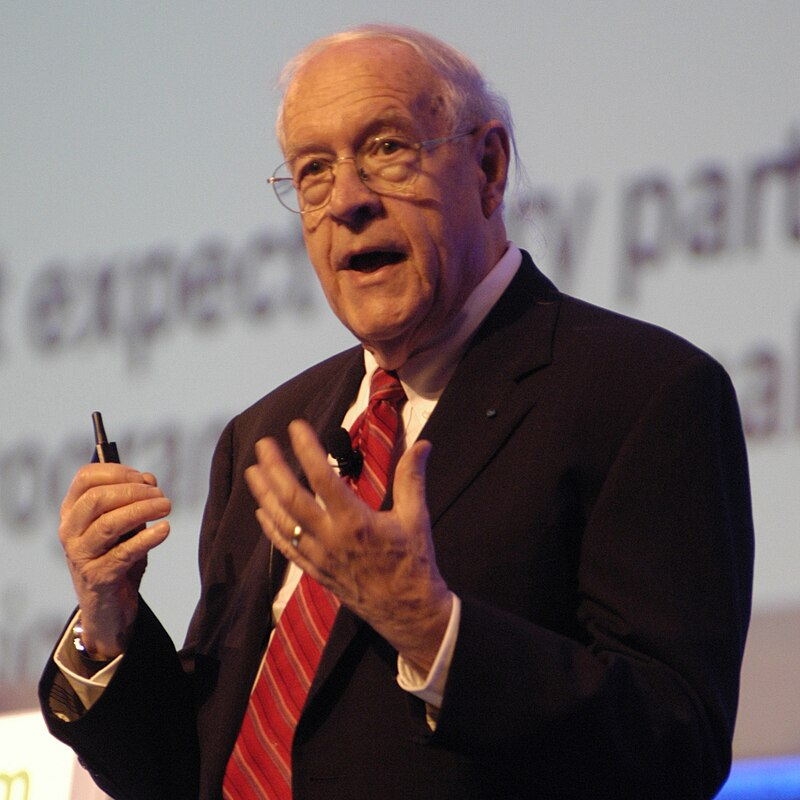
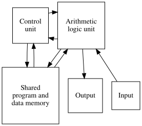
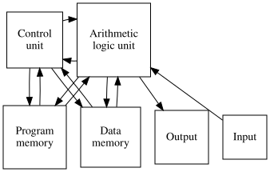
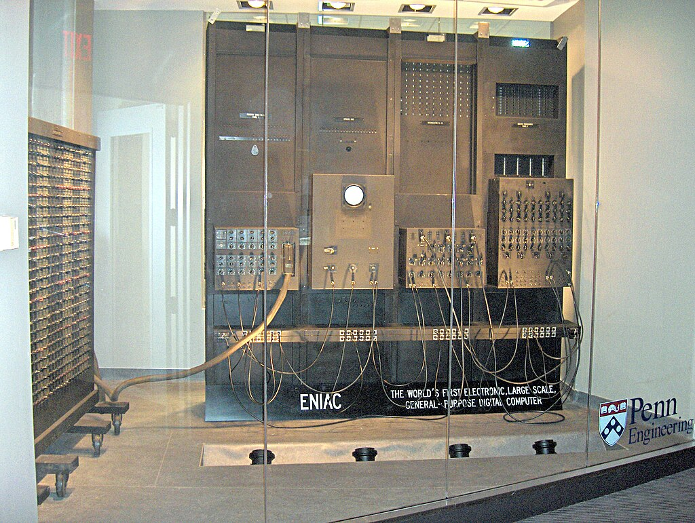
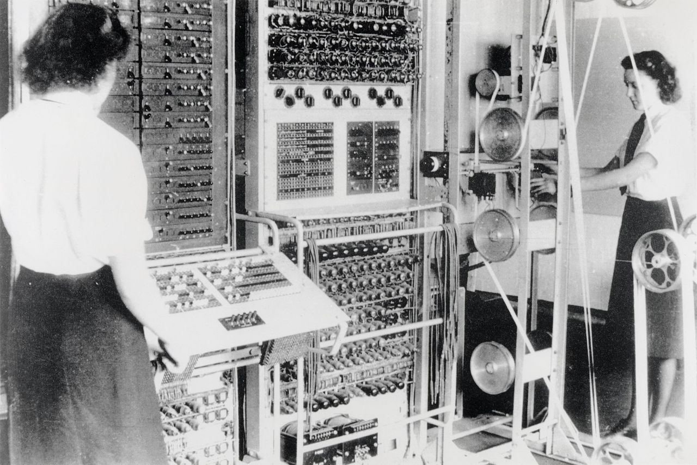
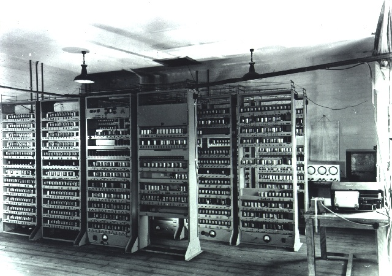

Architecture overview
CSC4001: Computer Systems and Architecture
Learning Outcomes
- State the five components of a Von Neumann computer.
- Describe the difference between the Von Neumann and Harvard architecture.
- Explain the advantages and disadvantages of the Von Neumann vs Harvard architectures.
- Argue for the “best” architecture in a given situation.
Architecture
“Computer architecture, like other architecture, is the art of determining the needs of the user of a structure and then designing to meet those needs as effectively as possible within economic and technological constraints.”
– Frederick P. Brooks
Computer Architecture
A description of a computer (or computer system) which is made from component parts.
Often a high-level description, indicating how components are linked and what each does.
Sometimes includes details such as the instruction set used and other implementation details.
Computer Architecture
1837: First documented computer architecture was in correspondence between Charles Babbage and Ada Lovelace, where Babbage described his analytical engine.
1890: Herman electromechanical tabulating machine used to analyse census data stored on punched cards.
1936, Conrad Zeus described a computer where both instructions and data are stored in the same memory: First documented instance of a “stored program” or general purpose computer.
Computer Architecture
- 1945, John Von Neumann described the famous Von Neumann Architecture in his paper on the EDVAC computer (successor to the ENIAC).
Computer Architecture
- 1946, Alan Turing wrote a detailed proposal for the electronic calculator, Automatic Computing Engine, citing Von Neumann.
Von Neumann vs Harvard
Von Neumann Architecture

Five components
- Store
- Control Unit
- Arithmetic Logic Unit
- input
- Output
Store
- To store data and instructions. E.g., paper tape, magnetic tape, RAM.
Control Unit
- decides which instruction to perform next.
Arithmetic Logic Unit
- Performs calculations.
- Typically the ALU and control unit are combined into the CPU.
- Operations performed on the hardware, or implemented in software.
- In early computers, electromechanical hardware was used; these days transistors are used, which require much less energy.
Input and Output
- Means for the user to interact with the computer.
- Keyboard, mouse, camera, sensors.
- Monitor, speakers.
- Varied and interesting ways for humans and computers to interact.
Key features
Instructions and data are stored in the same memory.
Simple, cost-effective and widely used.
Harvard Architecture

Harvard Architecture
Has separate memory for instructions and data.
Well suited to embedded systems and main-frames.
Discussion
In small groups
- In which situations is each architecture used?
- Today and historically?
- Why is it a good choice for that situation, or why not?
- Things to think about:
- where are the bottlenecks?
- special purpose vs general purpose
- data integrity / tampering / security
Before the era of personal computers
1949
“The”brain” [computer] may one day come down to our level [of the common people] and help with our income-tax and book-keeping calculations. But this is speculation and there is no sign of it so far.”
– British newspaper The Star in a June 1949 news article about the EDSAC computer.
1953
“I think there is a world market for maybe five computers.”
– Thomas Watson, IBM Chairman, although this is now thought to be urban legend.
Learning Outcomes
- Give an overview of early computers: use, specs, how they were programmed.
- Compare early and modern computers
- Explain how developments in early computing have influenced modern computer hardware.
Representing numbers
Integers
We already saw that an unsigned integer number can be represented in Binary.
Usually the right-most bit represents the least significant digit.
Little-endian representation.
Signed integers may be represented in several ways:
Sign+magnitude: one bit is reserved for the sign, the rest for the value.
This representation allows \(+0\) and \(-0\).
One’s complement: positive numbers represented as usual, negative numbers represented by flipping all their bits.
Again, we have \(+0\) and \(-0\).
Two’s complement: positive numbers represented as usual, negative numbers represented by adding one then flipping all their bits.
only one \(0\), no redundancy.
Floating point numbers
IEEE 754 defines a standard for representing and manipulating floating point numbers.
Represented in a similar way to scientific notation.
E.g., \(300,000,000 = 3 \times 10^8\).
- The \(3\) is called the fraction (coefficient or mantissa).
- The \(8\) (from \(10^8\)) is called the exponent.
IEEE 754 defines:
- The base, typically \(2\) for binary, but sometimes \(10\).
- Precision (number of digits to represent the fraction).
- An exponent range.
Floating point numbers
Using \(n\) bits, the representation consists of
- \(1\) bit for the sign,
- \(n - p - 1\) bits for the exponent.
- \(p\) bits for the fraction (stored in Binary),
Any signed number up to \(p\) significant digits and a maximum exponent of \(n-p-1\) can be defined.
Positive and negative infinity.
A representation for not a number, e.g., for the result of division by zero.
32-bit floating point
Representation used for the float type in many programming languages.

\(32\) bits:
- \(1\) bit for the sign,
- \(8\) bits for the exponent,
- \(23\) bits for the fraction.
Around \(7\) decimal digits for the fraction.
A
doubleuses \(64\) bits, \(52\) bits (around \(16\) decimal digits).
Floating point numbers
Advantages
Efficient representation of very large and very small numbers.
Fast computation due to many years of hardware development.
Disadvantages
- Floating point errors.
Precision and accuracy
- Precision: how many significant digits,
- Accuracy: how close to the true value.
A value may be precise but not accurate, accurate but not precise, or both inaccurate and imprecise.
Floating point errors
We know that \(1/3 + 1/3 + 1/3 = 1\).
However, \(0.3333333333 + 0.3333333333 + 0.3333333333 = 0.9999999999\)!
\(1/10\) is easy to represent in decimal: \(0.1\).
However, in binary, it is \(0.001100110011\).
Floating point representation is sufficient for most applications, e.g., 3D games.
However, we have to take care with things like currency, which must be correct.
History
But first, why are we doing this?
- Gain perspective.
- Understanding of why things are the way they are today.
- Learn from previous successes and failures.
Early computers
The ENIAC (1945)
Electronic Numerical Integrator and Computer
Special purpose computer for artillery firing table calculations.
Located at the School of Engineering and Applied Science, Pennsylvania State University

Colossus (1943-45)

- Special purpose computer developed at Bletchley Park to help break the Lorenz cipher.
- Designed by Tommy Flowers, a research engineer at the General Post Office, based on plans by Code and Cipher School mathematician Max Newman.
General purpose computers (post WW2)
Von Neumann arranged a 6-week summer workshop to design and build a new type of computer.
General purpose: many early computers were designed with a specific task in mind, which meant they were difficult to repurpose.
Von Neumann wanted to build a stored program computer.
Electronic:replacing electromechanical components which were brittle, hot and noisy.
Colossus and the ENIAC both consumed 150KW of power.
Use binary, which is the easiest encoding to work with when using electronic components.
Maurice Wilkes
Cambridge mathematician, physics PhD on “radio propagation of very long radio waves in the ionosphere”.
Attended Jon Neumann’s workshop, then returned to Cambridge to build the EDSAC machine.
Worked in radar during WW2, which inspired the memory technology for EDSAC.
Memory was a limitation for early electronic computers, Wilkes used “delay lines”, mercury tubes and an oscilloscope, as memory.
EDSAC (6 May 1949)
Electronic Delay Storage Automatic Calculator
One of the first stored program computers which used binary.
Developed by Maurice Wilkes, William Renwick (hardware engineer) and David Wheeler (first system software engineer).

Usage
A condition for funding was that EDSAC must provide a service, as opposed to just being an engineering experiment.
Ronald Fisher, with Wilkes and Wheeler, used EDSAC to solve a differential equation for gene frequency – first use of computers in biology.
In 1951, Miller and Wheeler computed a 79-digit prime number, the largest known at its time.
EDSAC played a role in Nobel-prize-winning research: Nobel laureates thanked EDSAC in their acceptance speech. John Kendrew and Max Perutz (Chemistry, 1962), Andrew Huxley (Medicine, 1963) and Martin Ryle (Physics, 1974)
EDSAC remained in operation until 11 July 1958, when it was superseded by EDSAC 2, which ran until 1965.
Over to you…
Exercise: computer history research
In pairs, teams, or individually…
- Choose a computer from history. Find out:
- Who created it, and when?
- What could it do? hardware operations
- Specs: processing, memory, operations per second.
- How was it programmed? Could it be programmed?
- How did programmers / operators / scientists interact with it? Input/output mechanisms, how was it debugged?
EDSAC Simulator
Exercise: play with the EDSAC simulator
Martin Campbell Kelly, University of Warwick, developed an EDSAC simulator.
Several programs and games are available.
Try Sandy Douglas’ OXO game (a tic-tac-toe game vs the computer).
Although a faithful simulation, it is still easier to use than the real thing – imagine loading the paper tape, vacuum tubes blowing frequently, and try setting the speed to EDSAC real-time.
S1: Report on core computer architectural components
Part 1: research
- Choose a time period of 15-20 years, and an element of computer hardware.
- Consider the following prompt: explain the impact of your chosen element of computer architecture during your chosen time period.
- Without using an LLM, but with reference to at least three academic sources, answer the above prompt. Focus on why evolutions in your chosen component had the impact they did, 800 words approx, not including refgerences and citations
Part 2: LLM analysis
Use an LLM to generate a response to the above prompt.- Analyse the LLM’s response: validate the claims it has made, with reference to a range of academic sources.
- Conclude whether you are able to accept or reject its claims.
- 800 words approx
Deadline: 27 November 2026
Next time
The CPU